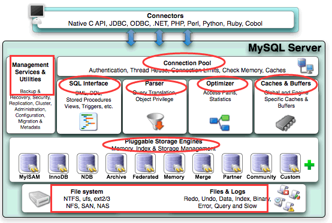
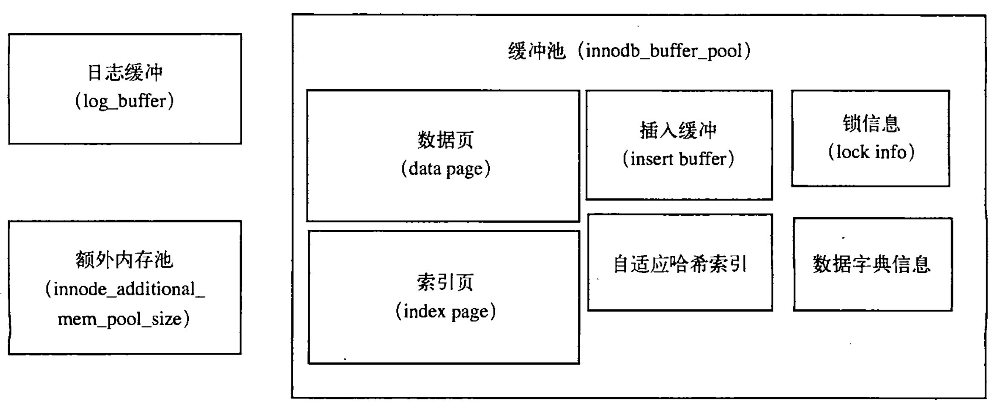
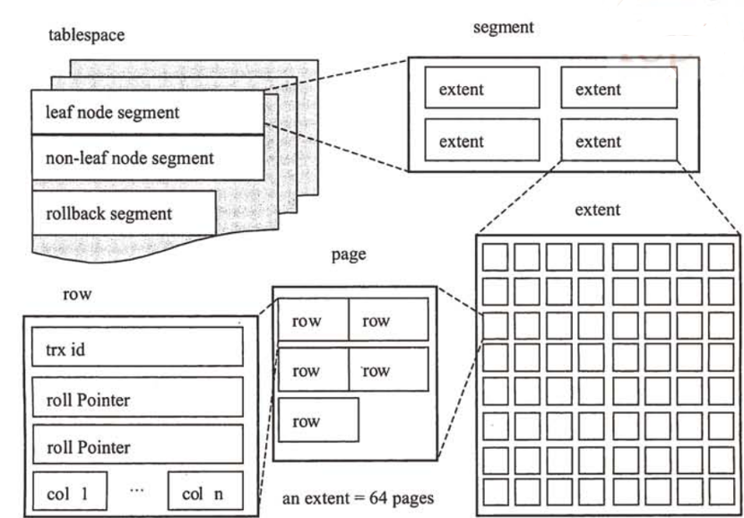

本篇文章是针对于 InnoDB存储引擎 的阅读笔记。
理解数据库的存储引擎可以更好地了解数据库运行的原理、索引算法、事务以及性能调优等。
本文 主要是阅读 《MySQL技术内幕: InnoDB存储引擎》 所做的笔记。
如果想亲自阅读的童鞋，这里附录了本书的 PDF 链接: 《MySQL 技术内幕: InnoDB 存储引擎》
# 第一章 MySQL 体系结构和存储引擎
# 定义数据库和实例
MySQL 是一个单进程多线程架构的数据库,类似的有SQL Server、 Oracle Windows版 |
什么是数据库？ 物理操作系统文件或其他形式文件类型的结合
什么是数据库实例？ 由数据库后台进程 / 线程以及一个共享内存区组成
# Mysql 体系结构

如图 1-1 所示，MySQL 由以下几个部门组成
- 链接池组件
- 管理服务和工具组件
- SQL 接口组件
- 查询分析器组件
- 优化器组件
- 缓冲 (Cache) 组件
- 插件式存储引擎
- 物理文件
存储引擎是基于表的，而不是数据库
# MySQL 表存储引擎
# 第二章 InnoDB 存储引擎
# InnoDB 体系架构
# 后台线程
默认情况下，InnoDB 存储引擎的后台线程有 7 个
4 个 IO 线程 [分别是 insert buffer thread, log thread, read thread, write thread]
1 个 master thread
1 个锁 (lock) 监控线程
1 个错误监控线程
InnoDB 引擎在master thread 上几乎实现了所有功能
# 内存
InnoDB 存储引擎 内存 由以下几个部分组成。
缓冲池 (buffer pool)
重做日志缓冲池 (redo log buffer)
额外内存池 (additional memory pool)

缓冲池是占最大内存的部分，用来存放各种数据的缓存InnoDB存储引擎 的工作方式是将数据库文件按 页 (每页 16K) 读取到缓冲池，然后按 最近最少使用(LRU) 算法来保存在缓冲池中的缓存数据
什么是脏页？数据库文件需要修改时，先修改在缓冲池中的页。 发生修改后，该页即为
脏页。
# master thread
master thread 的线程优先级最高，其由以下 4 个循环 (loop) 组成:
- 主循环 (loop)
- 后台循环 (background loop)
- 刷新循环 (flush loop)
- 暂停循环 (suspend loop)
master thread 会根据数据库运行的状态在这几个循环中进行切换
# 自适应哈希索引
InnoDB存储引擎 会监控对表上索引的查找，如果观察到建立哈希索引可以带来速度上的提升，则建立哈希索引 (所以称为自适应的).
自适应哈希索引通过缓冲池的 B + 树构造而来，因此建立的速度很快。
而且不需要将整个表都建哈希索引， InnoDB存储引擎 引擎会自动根据访问的频率和模式来为某些页建立哈希索引。
哈希索引只能用来搜索等值的查询，对于如范围查找，是不能使用的。
# 第四章 表
简单的说，表就是关于特定实体的数据集合，这也是关系型数据库模型的核心
在 InnoDB存储引擎 表中，每张表都有个主键，如果在创建表时没有显式地定义主键 (Primary Key), 则 InnoDB存储引擎 会按如下方式选择或创建主键:
- 先看表中是否有非空的
唯一索引(Unique NOT NULL), 如果有，则该列即为主键。- 不符合上述条件，
InnoDB存储引擎会自动创建一个 6 个字节 大小的指针。
# InnoDB 逻辑存储结构
InnoDB存储引擎 所有的数据都被逻辑地存放在一个空间中 --- 表空间表空间 又由 段(segment) , 区(extent) , 页(page) 组成.(页有时也被称为 块block )

# 段 (segment)
图 4-1 显示了表空间由各个段组成。常见的有 数据段 ， 索引段 ， 回滚段 等。数据段 即为 B + 树的叶子节点 (leaf node segment), 索引段 即为 B + 树的非叶子节点 (non-leaf node segment)
# 区 (extent)
区是由 64 个 连续的页组成，每个页大小为 16KB, 即每个区的大小为 1MB。
对于大的数据段， InnoDB存储引擎 最多每次可以申请 4 个区，以此来保证数据的顺序性能。
# 页 (page) / 块 (block)
页时 InnoDB 磁盘管理的最小单位，每个页大小为 16KB。
常见的页类型有:
- 数据页 (B-tree Node)
- Undo 页 (Undo Log Page)
- 系统页 (System Page)
- 事务数据页 (Transaction system Page)
- 插入缓冲位图页 (Insert Buffer Bitmap)
- 插入缓冲空闲列表页 (Insert Buffer Free List)
- 未压缩的二进制大对象页 (Uncompressed BLOB Page)
- 压缩的二进制大对象页 (Compressed BLOB Page)
# 行
InnoDB存储引擎 是面向 行 的 (row-oriented), 数据的存放按 行 进行存放。
每个页存放的行记录是 hard-coding 的，最多允许存放 (16 * 1024B / 2) - 200 行的记录，即 7992 行记录。
计算方式：每页大小为 16KB, 每个记录最少 2 字节，每个页都要预留 200 字节。
解释：这两行记录是虚拟记录，用来限定记录的边界，最大虚拟记录和最小虚拟记录
# 约束
# 数据完整性
数据完整性有三种形式
- 实体完整性：保证表中有一个主键
- 域完整性：保证数据的值满足特定的条件 (如，选择合适的数据类型可以确保一个数据值满足特定条件)
- 参照完整性：保证两张表之间的关系
InnoDB存储引擎 提供以下几种约束
- Primary Key
- Unique Key
- Foreign Key
- Default
- NOT NULL
# 约束和索引的区别
当创建一个唯一索引时，也就创建了一个唯一的约束。 | |
但是约束和索引的概念不同，约束更是一个逻辑的概念，用来保证数据完整性。而索引是一个数据结构，有逻辑上的概念，在数据库中更是一个物理存储方式 |
# 视图
视图是一个命名的虚表，它由一个查询来定义，可以当作表使用，但视图中的数据没有物理变现形式。
# 第五章 索引与算法
InnoDB存储引擎 支持常见的两种索引：B + 树索引和哈希索引。
B + 树索引的 B 不是代表二叉 (binary), 而是代表平衡 (balance)。
B + 树从最早的平衡二叉树演化而来，但是 B + 树不是一个二叉树。
B + 树索引并不能找到一个给定键值的具体 行 ，而只能找到被查找数据行所在的 页 。
然后数据库通过把 页 读入 内存 ，再在 内存 中进行查找，最后得到要查找的数据。
# B + 树
- 非叶子节点不存储 Data, 只存储索引 (冗余), 可以放更多的索引。 (索引
块/页内存 16KB ，其中地址块 6B)- 叶子节点包含所有索引字段
- 叶子节点用指针连接 (双向指针), 提高区间访问的性能
# B + 树索引
数据库中的 B + 树索引可以分为聚集索引 (clustered index) 和辅助聚集索引 (secondary index). 其内部都是 B + 树的，即高度平衡的，叶子节点存放着所有的数据。
聚集索引和非聚集索引的不同是：聚集索引的叶子节点存放的是一整行的信息。
# 聚集索引
InnoDB存储引擎是索引组织表，即表中数据按照主键顺序存放。
聚集索引就是按照每张表的主键构造一颗 B + 树，并且叶子节点中存放着整张表的行记录数据，因此也让聚集索引的叶子节点成为数据页。
由于实际的数据页只能按照一颗 B + 树进行排序，因此每张表只能有一个聚集索引。
聚集索引的存储并不是物理上的连续，是逻辑上的连续。
- 页通过双向链表连接，页按照主键的顺序排列。
- 每个页中的记录也是通过双向链表进行维护。
# 辅助索引
对于辅助索引 (也称非聚集索引)，叶级别不包含行的全部数据。
叶节点除了包含用来排序的 key 以外，每个叶级别中的索引行还包含了一个书签 (bookmark)，该书签用来告诉 InnoDB 存储引擎好到与索引对应的行数据。
# B + 树索引的使用
# 什么时候用 B + 树索引
当访问高选择性字段并从表中取出很少一部分行时，对这个字段添加 B + 树索引是非常有必要的。
# 顺序读、随机读和预读取
# 辅助索引的优化使用
辅助索引的叶节点包含有主键，但是辅助索引的叶并不包含完整的行信息。
因此 InnoDB存储引擎 总是会先从辅助索引的叶节点判断是否能得到所需的数据。
# 联合索引
联合索引是指对表上的多个列做索引。
从本质来说，联合索引还是一个 B + 树，只是键值的数量不是 1，而是大于等于 2
最左前缀原则
联合索引按照这个原则才能走索引
# 哈希算法
InnoDB存储引擎 中自适应哈希索引使用的是散列表 (Hash Table) 的数据结构。
散列表不止存在于自适应哈希中，在每个数据库中都存在。
数据库中一般采用 链接法 (chaining) 解决 Hash 碰撞，哈希函数采用 除法散列方式: h (k) = k mod m
# 锁
锁是数据库系统区别于文件系统的一个关键特征。锁机制用于管理对共享资源的并发访问。
对于 MyISAM引擎 来说，其锁就是表锁。并发插入时性能会差点。
# InnoDB 存储引擎中的锁
# 锁的类型
InnoDB存储引擎 实现了如下两种标准的行级锁:
- 共享锁 (S Lock)，允许事务读一行数据。
- 排他锁 (X Lock)，允许事务删除或更新一行数据。
InnoDB存储引擎支持多粒度锁定，这种锁定允许在行级上的锁和表级上的锁同时存在。
为了支持在不同粒度上进行加锁操作，InnoDB存储引擎支持一种额外的锁方式：意向锁。意向锁是表级别的锁，目的是为了在一个事务中揭示下一行将被请求的锁的类型。目前支持两种意向锁：- 意向共享锁 (IS Lock)，事务想要获得一个表中某几行的共享锁。
- 意向排他锁 (IX Lock)，事务想要获取一个表中某几行的排他锁。
举个例子： | |
事务A锁住了表中的一行，让这一行只能读，不能写 | |
之后，事务B申请整个表的写锁。 | |
这是数据库要判断: | |
step1：判断表是否已被其他事务用表锁锁表 | |
step2：判断表中的每一行是否已被行锁锁住。 | |
当执行step2的时候需要扫全表，显然效率过低。 | |
这时就有个意向锁。 事务A必须先申请表的意向共享锁，成功后再申请一行的行锁。 |
# 一致性的非锁定读操作
在默认情况下， InnoDB存储引擎 的 Select 操作使用一致性非锁定读。
一致性的非锁定行读 (consistent nonlocking read) 是指 InnoDB存储引擎 通过 行多版本控制 (multi versioning) 的方式来读取当前执行时间数据库中行的数据。
如果读取的行正在执行 Delete、Update 操作，这时读取操作不会因此而会等待行上锁的释放。相反， InnoDB存储引擎 会去读取行的一个 快照数据 。快照数据 是指该行之前版本的数据，该实现是通过 Undo 段来实现的。而 Undo 用来在事务中回滚数据，因此快照数据本身是没有额外的开销。
回滚可以用回滚日志（Undo Log）来实现，回滚日志记录着事务所执行的修改操作，在回滚时反向执行这些修改操作即可。
系统发生崩溃可以用重做日志（Redo Log）进行恢复，从而实现持久性。
与回滚日志记录数据的逻辑修改不同，重做日志记录的是数据页的物理修改。
快照数据是当前行数据之前的历史版本，可能有多个版本，一行可能不止一个快照数据，所以称其为 行多版本技术 。
由此带来的并发控制，称之为 多版本并发控制 (Multi Version Concurrency Control, MVCC)
# 快照读
MVCC 的 SELECT 操作是快照中的数据，不需要进行加锁操作。
SELECT * FROM table ...;
# 当前读
MVCC 其它会对数据库进行修改的操作（INSERT、UPDATE、DELETE）需要进行加锁操作，从而读取最新的数据。可以看到 MVCC 并不是完全不用加锁，而只是避免了 SELECT 的加锁操作。
INSERT;
UPDATE;
DELETE;
在进行 SELECT 操作时，可以强制指定进行加锁操作。以下第一个语句需要加 S 锁，第二个需要加 X 锁。
(这两个操作必须在一个事务中，当事务提交了，锁也释放了)
SELECT * FROM table WHERE ? lock in share mode; # 对行记录加一个 S 锁，其他事务可以向被锁定的记录加 S 锁，但对于加 X 锁，则会被阻塞。 | |
SELECT * FROM table WHERE ? for update; # 对读取的行记录加上一个 X 锁，其他事物想在这些行上加任何锁时都会被阻塞。 |
# 锁的算法
InnoDB存储引擎 有 3 个行锁的算法设计，分别是
- Record Lock: 单个行记录上的锁。(锁定一个记录上的索引，而不是记录本身。如果表没有设置索引，InnoDB 会自动在主键上创建隐藏的聚簇索引，因此 Record Locks 依然可以使用)
- Gap Lock: 间隙锁，锁定一个范围，但不包含记录本身
- Next-Key Lock: Gap Lock + Record Lock, 锁定一个范围，并且锁定记录本身
在 Repeatable Read 模式下，Next-Key Lock 算法是默认的行记录锁定算法。
# 锁问题
# 丢失修改
丢失修改指一个事务的更新操作被另外一个事务的更新操作替换。一般在现实生活中常会遇到，例如：T1 和 T2 两个事务都对一个数据进行修改，T1 先修改并提交生效，T2 随后修改，T2 的修改覆盖了 T1 的修改。
顾名思义即，我修改了一个字段的值，当修改完成我 select 时，发现当前值不是我修改的值，即丢失修改。
# 读脏数据
读脏数据指在不同的事务下，当前事务可以读到另外事务未提交的数据。例如：T1 修改一个数据但未提交，T2 随后读取这个数据。如果 T1 撤销了这次修改，那么 T2 读取的数据是脏数据。
比如，简单说就是我读到了别人的 draft 数据，该数据后又被撤销了。
# 不可重复读
不可重复读指在一个事务内多次读取同一数据集合。在这一事务还未结束前，另一事务也访问了该同一数据集合并做了修改，由于第二个事务的修改，第一次事务的两次读取的数据可能不一致。例如：T2 读取一个数据，T1 对该数据做了修改。如果 T2 再次读取这个数据，此时读取的结果和第一次读取的结果不同。
比如，即我在一个事务内 多次读取一个数据，多次读取的不一致。
不可重复读和脏读的区别是： 脏读是读到未提交的数据。不可重复读 读到的确实是已经提交的数据，但是其违反了数据库事务一致性的要求。
InnoDB存储引擎 中，通过使用 Next-Key Lock 算法来避免不可重复读的问题。在 MySQL 官方文档中，将不可重复读定义为 Phantom Problem，即幻读问题。
在 Next-Key Lock 算法下，对于索引的扫描，不仅仅是锁住扫描的索引，还锁住这些索引覆盖的范围 (gap)
因此对这个范围内的插入都是不允许的，这样就避免了另外的事务在这个范围内插入数据导致的不可重复的问题。
# 死锁
InnoDB存储引擎 的后台线程中有一个锁 (lock) 监控线程，该线程负责查看可能的死锁问题，并字段告知用户。InnoDB存储引擎 不会回滚大部分的错误异常，但是死锁除外。发现死锁后， InnoDB存储引擎 会马上回滚一个事务。
# 事务
事务用来保证数据库的完整性 ---- 要么都修改，要么都不做InnoDB存储引擎 中的事务完全符合 ACID 的特性
- 原子性 (Atomicity) 事务被视为不可分割的最小单元，事务的所有操作要么全部提交成功，要么全部失败回滚。
- 一致性 (Consistency) 事务将 DB 从一种状态变为下一种一致的状态。事务开始和结束，DB 的完整性约束没有被破坏。
- 隔离性 (Isolation) 一个事务的影响在该事务提交前对其他事务不可见。 ---- 通过锁来实现
- 持久性 (Durability)
# 事务的实现
隔离性由 锁 来实现，原子性、一致性、持久性通过数据库的 redo 和 undo 来完成。
# redo
InnoDB存储引擎 中，事务日志通过重做 (redo) 日志文件和 InnoDB存储引擎 的日志缓冲 (InnoDB Log Buffer) 来实现。
- 当一个事务开始时，会记录该事务的一个 LSN (Log Sequence Number, 日志序列号)
- 当事务执行时，会往
InnoDB存储引擎的日志缓冲里插入事务日志。 - 当事务提交时，必须将
InnoDB存储引擎的日志缓冲写入磁盘。也就是在写数据之前，要先写日志。这种方式称为预写日志方式 (Write-Ahead Logging, WAL)InnoDB存储引擎通过预写日志的方式来保证事务的完整性。
这意味着磁盘上存储的数据页和内存缓冲池中的页是不同步的，对于内存缓冲池中页的修改，先写入重做日志文件，再写入磁盘，因此是一种异步的方式。
# undo
undo 和 redo 正好相反，对 DB 进行修改时，DB 不但会产生 redo，而且还会产生一定的 undo, 即使执行的事务 / 语句失败了，或用 Rollback 回滚，就可以利用这些 undo 信息将数据回滚到修改之前的样子。
与 redo 不同的是，redo 存放在重做日志文件中，undo 存放在数据库内部的一个 特殊段(segment) 中，这称为 undo(段)(undo segment) ，undo 段位于 共享表空间内 。
对于 undo 页的回收是在 master thread 中进行的， master thread 并不是每次都回收所有的 undo 页。
对于 InnoDB存储引擎 ，DDL 语句都是隐式提交操作，所以需要注意 TRUNCATE TABLE 式 DDL 语言，是不能回滚的，而 DELETE 是 DML 语言，可以回滚。
# 事务的隔离级别
- Read Uncommitted (读未提交)
- Read Committed (读已提交)
- Repeatable Read (可重复读)
- Serializable (串行化)
补充: ReadView
MVCC 维护了一个 ReadView 结构，主要包含了当前系统未提交的事务列表 TRX_IDs {TRX_ID_1, TRX_ID_2, ...}，还有该列表的最小值 TRX_ID_MIN 和 TRX_ID_MAX。
在进行 SELECT 操作时，根据数据行快照的 TRX_ID 与 TRX_ID_MIN 和 TRX_ID_MAX 之间的关系，从而判断数据行快照是否可以使用：
TRX_ID_MIN <= TRX_ID <= TRX_ID_MAX，需要根据隔离级别再进行判断：
提交读：如果 TRX_ID 在 TRX_IDs 列表中，表示该数据行快照对应的事务还未提交，则该快照不可使用。否则表示已经提交，可以使用。
可重复读：都不可以使用。因为如果可以使用的话，那么其它事务也可以读到这个数据行快照并进行修改，那么当前事务再去读这个数据行得到的值就会发生改变，也就是出现了不可重复读问题。
# 分布式事务
InnoDB 存储引擎支持 XA 事务，通过 XA 事务可以来支持分布式事务的实现。
分布式事务指的是允许多个独立的事务资源 (transactional resources) 参与一个全局的事务中。
全局事务要求在其中所有参与的事务要么都提交，要么都回滚。在使用分布式事务时，InnoDB 存储引擎的事务隔离级别必须设置为 Serialiable .
分布式事务由一个或多个资源管理器 (Resource Managers)、一个事务管理器 (Transaction Manager) 和一个应用程序 (Application Program) 组成。
- 资源管理器：提供访问事务资源的方法。通常一个数据库就是一个资源管理器。
- 事务管理器：协调参与全局事务中的各个事务。需要和参与全局事务中的所有资源管理器进行通信。
- 应用程序：定义事务的边界，指定全局事务中的操作。
分布式事务使用两阶段提交 (two-phase commit) 的方式。 在第一阶段，所有参与全局事务的节点都开始准备 (Prepare), 告诉事务管理器它们准备好提交了。
在第二阶段， 事务管理器 告诉 资源管理器 执行 Rollback 还是 Commit。如果任何一个节点显示不能提交，则所有的节点都被告知需要回滚。